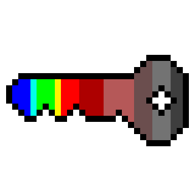

HyperKey
Fast leaf-level hyperspectral (SVC and more) data quality checking
Why HyperKey?
Sampling days out in the field are always long, and made longer still when you're working with something new.
I do my best by day: clip, instrument beep, clip, instrument beep. I'm looking down a thin line on a tiny screen, facing down glare from a late morning sun. Trying to make sure we're getting through every measurement we've planned for the day, marching against time. There's always more things to do and places to be when we head out from the field. And then we settle down, to review the data.
Is it fine? Is it, really? The data will follow the distribution - we checked them, as they came in. But it's the lines that live in the margins and the shape of the scatter itself that catch my eye, just a little too late in the evening as I'm catching my last cup of tea before bed. A problem for tomorrow, next week, next month, until it's a problem for next year and we're catching things that went wrong under the noonday sun, and I'm left wondering: can we do anything differently to keep this from happening again?
We can, and we will. And we're building the means for everyone who wishes to join us to do the same. Say hello to HyperKey.
What's HyperKey?
HyperKey's a free and open source suite of software designed to help pick out errors in leaf-level hyperspectral measurements as early as possible. We aim to eventually cover phone, desktop, and CLI deployments to integrate best to project-specific pipelines.
HyperKey is developed by the Australian Plant Phenomics Facility at the Australian National University (APPN-ANU), together with students from the Techlauncher program.
Currently, HyperKey takes in hyperspectral data files (SVC format, ASD and other formats planned later) with a metadata spreadsheet, and outputs:
- Combined spreadsheet of reflectance vs. wavelength and sample metadata
- Visual report of reflectance values, spread, and basic processing statistics
Some common failure modes intended to be easily observed with the report metrics are: mislabelling of white reference controls as leaf samples, insufficient exposure, light leakage into leaf clips, and duplicate file numbers.
Roadmap
- Phase 1 (Alpha versions available - still in development through Q4 2026): The core data organisation and reporting functions, accessed through command line interface.
- Phase 2: A desktop app providing a significantly easier to use interface to the same core functions.
- Phase 3: A mobile app that uses additional QC checks to provide fast on-device quality checks to replace the current immediate per-sample review process and constrain valid captures to within a predetermined range.
Does this sound useful for you?
Check out the HyperKey GitHub repo today!